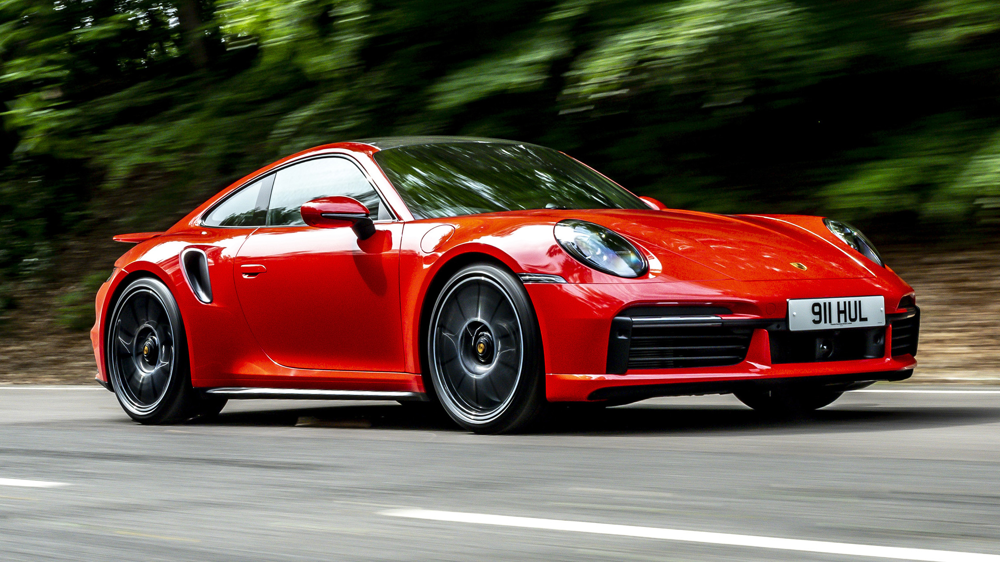

Good luck!
Good luck!
Thanks :)

Follow CODE WITH FLAMEZ
for more!!!
The DB5 is a luxury car that was produced by Aston Martin from 1963 to 1965. Its sleek design and powerful engine have made it a popular choice for celebrities and business executives. It also gained iconic status as the car driven by James Bond in several films.
5. Aston Martin DB5
The 250 GTO is a racing car that was produced by Ferrari in the early 1960s. Its elegant design and exceptional performance have made it one of the most sought-after cars by collectors.
4. Ferrari 250 GTO
The 911 is a sports car that has been produced by Porsche since 1963. Its rear-engined layout and powerful engines have made it a popular choice for driving enthusiasts and collectors.
3. Porsche 911
The Beetle, also known as the "Bug," is a small, rear-engined car that was produced by Volkswagen from 1938 to 2003. Its distinctive shape and affordable price made it a popular choice for families and young people in the 20th century.
2. Volkswagen Beetle

Introduced in 1970, the Challenger is a classic American muscle car renowned for its powerful engines, aggressive styling, and retro-inspired design. It has become a symbol of freedom, power, and individuality, making it a popular choice among car enthusiasts worldwide.
1. Dodge Challenger

5 Most Iconic cars in the world!
Drag the papers to move!
Hold right mouse button to rotate